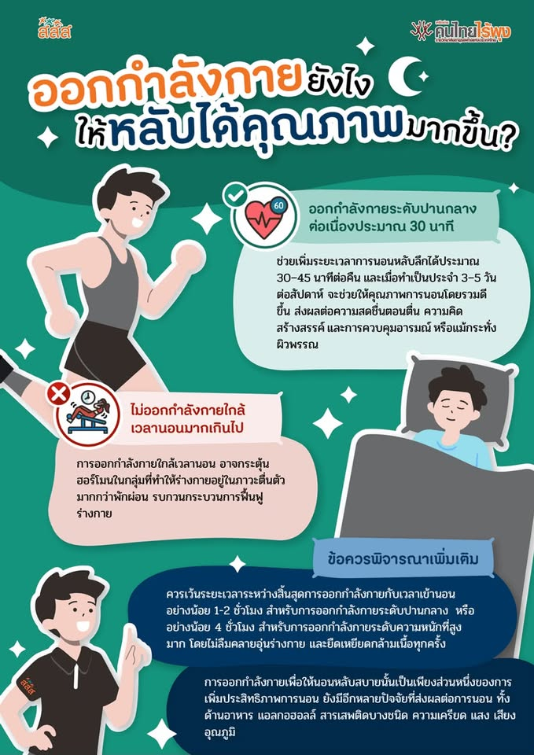

การออกกำลังกายและการพักผ่อน

การออกกำลังกายอย่างสม่ำเสมอช่วยให้ร่างกายแข็งแรง เพิ่มความทนทานของกล้ามเนื้อและหัวใจ และช่วยควบคุมน้ำหนัก วัยรุ่นควรเลือกกิจกรรมที่ตนเองชอบ เช่น วิ่ง ว่ายน้ำ เล่นฟุตบอล หรือปั่นจักรยาน นอกจากนี้ควรพักผ่อนให้เพียงพอ เพราะการนอนหลับช่วยให้ร่างกายได้ฟื้นฟูและทำให้สมองพร้อมสำหรับการเรียนและการทำกิจกรรมต่าง ๆ